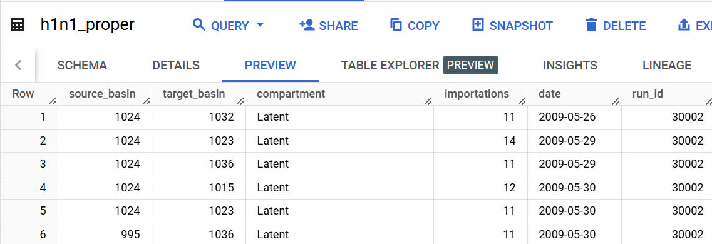
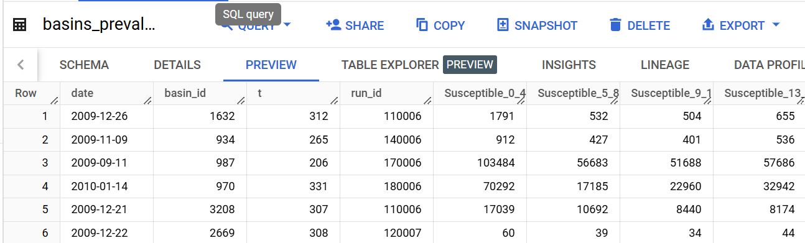

processing#
epidemic-intelligence is designed to handle large numbers of simulations, but in order to visualize importation data, we must only have one ‘run’ worth of data. To facilitate this, the processing module offers two tools for simplifying and aggregating importation data to make it ready for visualization. Additionally, SIR style data can be aggregated from date into week data.
summarize_runs#
The processing.summarize_runs function takes a BigQuery table containg many runs worth of data and reduces it to one run according to some method.
Parameters#
client (bigquery.Client): BigQuery client object.
table_name (str): BigQuery table name containing raw importation data in ‘dataset.table’ form.
destination (str): Name of resulting simplified table in ‘dataset.table’ form.
method (str, optional): Method used to determine how data is simplified. Must be one of:
'median'(default): For each time and location, the median value across all runs will be used. A fixed-time metric.'mean': For each time and location, the mean value across all runs will be used. Not recommended. A fixed-time metric.'mbd': Uses modified band depth to compute the most central run, then uses that run’s data for all times and locations. A curve-based metric.'ftvariance': Uses the summed variances of each run to compute the most central run, then uses that run’s data for all times and locations. A curve-based metric.'directional': Similar to'ftvariance', but first determines whether eachvalueis increasing or decreasing at each time step, then uses the summed variances of that data to compute the most central run, then uses that run’s data for all times and locations. A curve-based metric.
source_column (str, optional): Name of column in original table containing source identifier. Defaults to ‘source_basin’.
target_column (str, optional): Name of column in original table containing target identifier. Defaults to ‘target_basin’.
value_column (str, optional): Name of column in original table containing value identifier, which is what is being tracked. Defaults to ‘importations’.
compartment_column (str, optional): Name of column in original table containing compartment identifier. Defaults to ‘compartment’.
Returns#
True if function executed to completion.
Example#
import epidemic_intelligence as ei
from google.oauth2 import service_account
from google.cloud import bigquery
credentials = service_account.Credentials.from_service_account_file('../../../credentials.json') # use the path to your credentials
project = 'net-data-viz-handbook' # use your project name
# Initialize a GC client
client = bigquery.Client(credentials=credentials, project=project)
table_name = 'importation_data.h1n1_proper' # str, name of bigquery table
destination = 'importation_data.h1n1_proper_simple' # str, name of place where simplified table will be stored
method = 'directional' # mbd, directional, mean, median, or ftvariance
source_column = 'source_basin'
target_column = 'target_basin'
value_column = 'importations'
compartment_column = 'compartment'
ei.summarize_runs(client,
table_name,
destination,
method,
source_column,
target_column,
value_column,
compartment_column
)
---------------------------------------------------------------------------
ModuleNotFoundError Traceback (most recent call last)
Cell In[1], line 1
----> 1 import epidemic_intelligence as ei
2 from google.oauth2 import service_account
3 from google.cloud import bigquery
ModuleNotFoundError: No module named 'epidemic_intelligence'
aggregate_importations#
The processing.aggregate_importations function allows you to aggregate by date and compartment to further customize your data for visualization. Note that many parameters carry over from the simplify_multirun function, but that using the same table_name and destination will cause your simplified table to be overwritten.
Parameters#
client (bigquery.Client): BigQuery client object.
table_name (str): BigQuery table name containing importation data in ‘dataset.table’ form.
destination (str): Name of resulting aggregated table in ‘dataset.table’ form.
source_column (str, optional): Name of column in original table containing source identifier. Defaults to ‘source_basin’.
target_column (str, optional): Name of column in original table containing target identifier. Defaults to ‘target_basin’.
value_column (str, optional): Name of column in original table containing value identifier, which is what is being tracked. Defaults to ‘importations’.
run_id_column (str or None, optional): Name of column in original table containing run ID. If None, then it is assumed all data are part of a single run. Defaults to None.
compartment_column (str, optional): Name of column in original table containing compartment identifier. Defaults to ‘compartment’.
compartments (list or bool, optional): List of compartments to be combined into single compartment in aggregated table. If True, then all compartments will be aggregated. If False, then current compartments will be preserved. Defaults to False.
new_compartment (str, optional): If compartments is not False, then new_compartment will be the name of the aggregated compartment that is created. Defaults to ‘compartment’.
date (str, optional): The unit of time that data will be aggregated to. Must be one of:
'date'(default): Will preserve current dates.'epi': Will aggregate data into CDC epiweeks. ‘date’ column of table must be of type datetime. Will create a temporary table in your BigQuery project, which is deleted upon completion.'iso': Will aggregate data into ISO weeks. ‘date’ column of table must be of type datetime.
Returns#
True if function executed to completion.
Example#
table_name = 'importation_data.h1n1_proper_simple'
destination = 'importation_data.h1n1_proper_simple_agg'
# all ported over from above
source_column = 'source_basin'
target_column = 'target_basin'
value_column = 'importations'
# date information
date = 'iso'
# compartment information
compartment_column = 'compartment'
compartments = ['Infectious_Asymp', 'Infectious_SympT'] # list, or None to include all
new_compartment = 'Infectious' # str, or None
ei.aggregate_importations(client=client,
table_name=table_name,
destination=destination,
source_column=source_column,
target_column=target_column,
value_column=value_column,
compartment_column=compartment_column,
compartments=compartments,
new_compartment=new_compartment,
date=date,
)
aggregate_sir#
The processing.aggregate_importations function is designed to be aggregate SIR style data into ISO or epiweeks.
Parameters#
client (bigquery.Client): BigQuery client object.
table_name (str): BigQuery table name containing importation data in ‘dataset.table’ form.
destination (str): Name of resulting aggregated table in ‘dataset.table’ form.
geo_column (str): Name of column in original table containing geography identifier. Defaults to ‘basin_id’.
value_columns (dict): Dictionary where keys are original columns and values are aggregated column names, or list of column names to port over, which will keep the same name and not be aggregated.
run_id_column (str, optional): Name of column in original table containing run ID. Defaults to run_id.
date (str, optional): The unit of time that data will be aggregated to. Must be one of:
'epi'(default): Will aggregate data into CDC epiweeks. ‘date’ column of table must be of type datetime. Will create a temporary table in your BigQuery project, which is deleted upon completion.'iso': Will aggregate data into ISO weeks. ‘date’ column of table must be of type datetime.
Returns#
True if function executed to completion.
Example#
table_name='h1n1_R2.basins_prevalence'
destination='h1n1_R2.basins_prevalence_agg'
geo_column='basin_id'
value_columns={'Infectious_SympT_18_23': 'Infectious_18_23', 'Infectious_Asymp_18_23': 'Infectious_18_23', 'Susceptible_18_23': 'Susceptible_18_23'}
date='iso'
ei.aggregate_sir(
client=client,
table_name=table_name,
destination=destination,
geo_column=geo_column,
value_columns={'Infectious_SympT_18_23': 'Infectious_18_23',
'Infectious_Asymp_18_23': 'Infectious_18_23',
'Susceptible_18_23': 'Susceptible_18_23'},
date='iso'
)
True